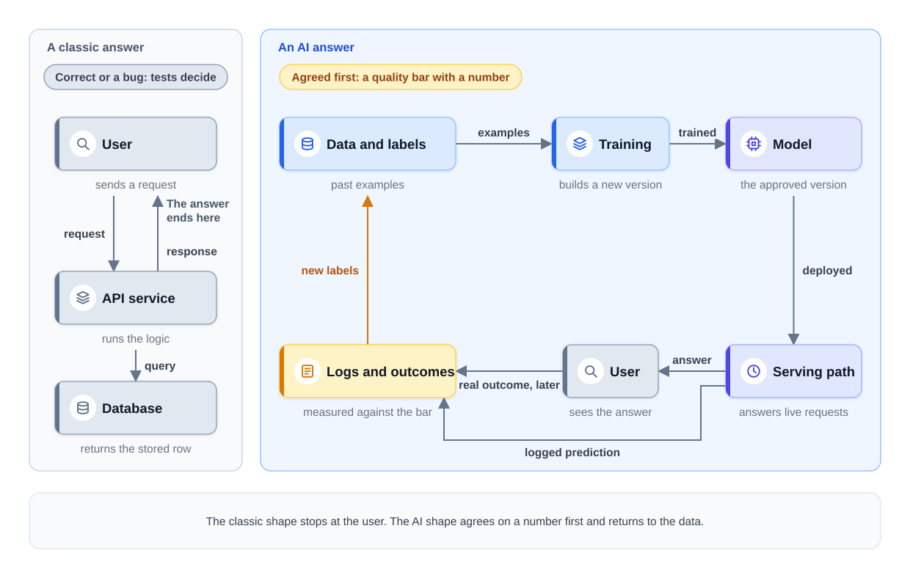
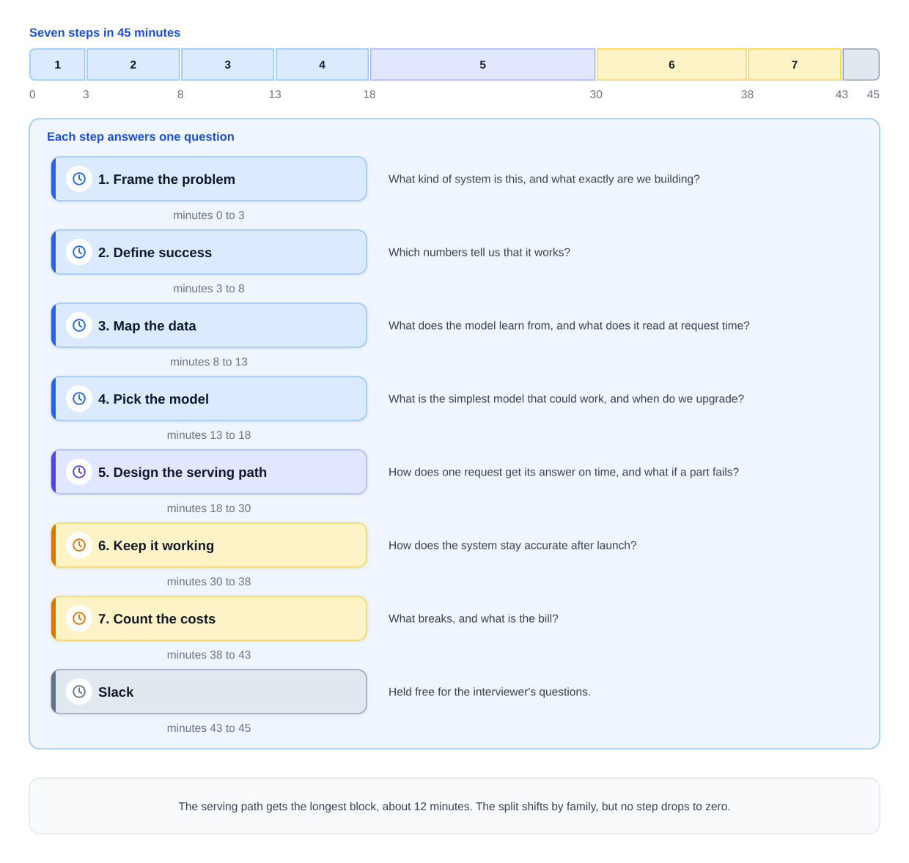

0% completed
A Framework for AI Design Answers
On This Page
Know the Vocabulary
Part 1: Why AI Answers Need Their Own Order
The Problem
The Two Places the Classic Skeleton Breaks
What Interviewers Expect
Part 2: The Seven Steps
The Definition
What the Framework Is Not
Part 3: Steps 1 to 4, Before the Diagram
Step 1: Frame the Problem
Step 2: Define Success
Step 3: Map the Data
Step 4: Pick the Model
Part 4: Steps 5 to 7, the Design and Its Life
Step 5: Design the Serving Path
Step 6: Keep It Working
Step 7: Count the Costs
Part 5: The 45-Minute Clock
The Split
How the Split Shifts by Family
What Goes Wrong When Step 1 Runs Long
When the Time or the Plan Changes
Part 6: Follow One Answer
Part 7: Where the Course Goes Deeper
Part 8: Using This in an Interview
Common Mistakes
Mistake 1: Using the Classic Skeleton Unchanged
Mistake 2: Scoping Without Naming the Known System
Mistake 3: Spending Too Long on Step 1
Mistake 4: Starting With the Most Complex Model
Mistake 5: Leaving Arrows Bare
Mistake 6: Stopping When the Answer Reaches the User
FAQs
Key Takeaways
Check Your Understanding
Know the Vocabulary
This lesson uses the terms below many times. Read them once now, and come back here when a later section needs one.
- Framework: A fixed order of steps for answering a design question. This course uses one framework with seven steps for every AI design question.
- Question family: One of three groups of AI design questions, sorted by what the system mainly outputs. Predictive systems output numbers or labels, such as scores. Generative systems output content, and agentic systems take actions.
- Known system: A design you have already studied, such as fraud detection or a recommendation system. Most interview questions are a known system with one or two changes.
- Scope: The parts of the product your design will cover, and the parts it will leave out.
- Model: A function whose behavior is learned from data instead of written by a developer. It takes an input and returns an output, such as a score or a piece of text.
- Large language model (LLM): A large model that reads text and writes text. A hosted LLM is one that a provider runs for you, and you pay for each call.
- Quality bar: The number a model must reach to be good enough, such as an average miss of less than 5 minutes.
- Latency budget: The most time a request may take, such as 100 milliseconds (ms). Each part of the request gets a share of it.
- Label: The correct answer for one past example, such as the delivery time that really happened. A model learns from examples that pair inputs with labels.
- Label delay: The time between a prediction and the arrival of its label.
- Freshness: How recent an input value must be when the model uses it.
- Baseline: The simplest approach that could work. Every more complex model must beat it.
- Fine-tuning: Training an existing model further on your own examples, so that it changes how it behaves.
- Retrieval: Finding the documents or passages that are relevant to a request, so that a model can use them.
- Serving path: The route a live request takes through the system, from the user to the answer and back.
- Fallback: What the system does, decided in advance, when a part is slow or fails.
- Feedback loop: The path that carries real outcomes from users back into the system, so that the next version can improve.
- Shadow deployment: Running a new version on live traffic while only the old version answers users. The new version's outputs are logged and compared, never shown. Later lessons also call this running in shadow mode.
- Ledger: A short spoken list that closes the answer. The failure ledger lists what breaks, and the cost ledger gives the bill.
Part 1: Why AI Answers Need Their Own Order
The Problem
Picture a candidate who has practiced classic system design. The question is to design a delivery-time estimate for a food-delivery app. When a customer opens checkout, the app shows how long the delivery will take.
The candidate uses the classic skeleton that has worked before. They gather requirements, define an API, draw a service and a database, and then go deep on scaling. The answer ends when the estimate reaches the customer's screen.
The interviewer then asks how the candidate knows that the estimate is good. Next, the interviewer asks what happens next month, when traffic patterns change. The candidate has no answer ready for either question.
The classic skeleton is not wrong, but it is incomplete for AI questions. It breaks in two places.
The Two Places the Classic Skeleton Breaks
Break 1: Quality must be pinned down early, as a number. In a classic system, a correct answer is a fact. The database returns the right row, or it has a bug. A model is right only some of the time, or only close to right, so its quality is a number that must be measured. Every later choice depends on that number. So the quality metric must be agreed at the start, not at the end.
Break 2: The answer must end in a loop, not in a response arrow. A classic answer ends when the response reaches the user. An AI system keeps going after that. The real outcome arrives later and becomes a new example. Those examples measure the model and train the next version. Without that loop, the model can slowly get worse as the world changes, and nobody notices. What Changes When the System Learns explains why a system that learns from data behaves this way.
The diagram below puts the two shapes side by side.

Notice where each shape stops. The classic shape stops at the user, while the AI shape passes the user and returns to the data.
What Interviewers Expect
Interviewers expect a complete answer in about 45 minutes. Complete means the answer reaches how the system is measured, how it stays accurate, what breaks, and what it costs.
They do not expect a new invention. They expect you to cover every step in a sensible order, at the right depth. A fixed framework makes that possible under pressure.
Part 2: The Seven Steps
The Definition
The framework is a fixed order of seven steps. You use the same seven steps for every AI design answer, whatever the family.
-
Frame the problem. Name the family and the known system, then agree on the scope.
-
Define success. Put a number on quality, latency, and scale and cost.
-
Map the data. Say where the data and labels come from, how late the labels arrive, and how fresh the inputs must be.
-
Pick the model. Start with a baseline, and name the condition that would justify something more complex.
-
Design the serving path. Draw the live request path. Every arrow gets a time limit or a cost, and a failure behavior.
-
Keep it working. Close the feedback loop, and ship every change safely.
-
Count the costs. Say the failure ledger and the cost ledger.
The table below gives the question each step answers.
| Step | The question it answers |
|---|---|
| 1. Frame the problem | What kind of system is this, and what exactly are we building? |
| 2. Define success | Which numbers tell us that it works? |
| 3. Map the data | What does the model learn from, and what does it read at request time? |
| 4. Pick the model | What is the simplest model that could work, and when do we upgrade? |
| 5. Design the serving path | How does one request get its answer on time, and what if a part fails? |
| 6. Keep it working | How does the system stay accurate after launch? |
| 7. Count the costs | What breaks, and what is the bill? |
Notice that Steps 2 and 6 fix the two breaks from Part 1. Step 2 pins down quality early, and Step 6 closes the loop.
What the Framework Is Not
The framework is not a script to read aloud. It is an order for your thinking. The interviewer can still steer you, and you follow them.
It is not a reason to spend equal time on every step. Part 5 gives each step its own share of the 45 minutes.
It is not only for new designs. When an interviewer shows you a finished design and asks what is wrong, the seven steps work as a checklist. Critiquing a System Design shows that use.
Part 3: Steps 1 to 4, Before the Diagram
The first four steps decide what you are building and from what. The examples come from the food-delivery company that runs through this course. Its delivery-time estimate is predictive, and its support assistant is generative. An agent that issues small refunds would be agentic. All numbers in this lesson are illustrative assumptions.
Step 1: Frame the Problem
Step 1 has two moves that come before any scoping.
Move 1: Name the family. Ask what the system mainly outputs. A number or a label, such as a score or an estimate, points to the predictive family. Content points to the generative family. Actions point to the agentic family. The Three Question Families gives this test in full.
Move 2: Name the known system. Say which design the question is closest to, and what changes. For example: "This is a timing estimate on a fast request path, like the arrival estimate in a ride-hailing app. What changes is that the estimate must also cover the kitchen, and its prep time changes every minute."
Naming the known system helps in two ways. First, it gives you a proven architecture to adapt, so you do not start from a blank page. Second, it changes the interviewer's role from examiner to collaborator. They now know your route, so they can work with you instead of only testing you.
Then state the scope out loud, saying what is in and what is out. For the estimate, the number shown when checkout opens is in scope. Live updates after the order is placed are out of scope for now.
Close Step 1 with a one-line checkpoint question: "Shall I proceed on that scope?" A wrong scope found at minute 3 costs little. One found at minute 25 costs most of the interview.
Step 2: Define Success
Step 2 turns the product goal into requirements on three axes, and each one gets a number.
-
Quality is the metric that says the model is good, with a target. For the estimate, the average miss might need to stay under 5 minutes. Many answers also name a guardrail metric, a second metric that must not get worse. Here, the share of orders that arrive far later than promised is a good guardrail metric.
-
Latency is the time budget for one request. The estimate must appear within about 100 ms, because the customer is waiting at checkout.
-
Scale and cost are the volume and what each request may cost. The company might handle about 500,000 orders a day.
For a generative system, the same three axes apply with different units. Quality might be the share of support questions answered correctly. Latency might be the time until the first words appear, and cost is often counted per conversation.
These numbers are the measuring stick for every later step. Without them, no choice in the design can be called good or bad.
Step 3: Map the Data
Step 3 answers three questions. Where does the data come from? Where do the labels come from, and how late do they arrive? How fresh must the inputs be when the model reads them?
The answers differ a lot from system to system, as the four examples in the table show.
| System | Where labels come from | Label delay | Freshness the inputs need |
|---|---|---|---|
| Delivery-time estimate | The real delivery time | About an hour | The current kitchen load, updated within seconds |
| Fraud detection | Chargebacks | Often weeks | The card's activity, up to the last few seconds |
| Video recommendations | Clicks and watch time | Minutes | The user's recent watches, within minutes |
| Support assistant | Often none at the start | Not yet defined | Help articles and policy pages that are up to date |
Two rows need a closer look.
Fraud labels arrive weeks late. A chargeback is a payment that the card owner's bank reverses, often because the owner says they did not make it. It is the main label for fraud, and it can arrive weeks after the payment. Meanwhile, the inputs must be very fresh. A stolen card can be used many times within a minute. So the model's counts of recent payments must include the last few seconds of activity.
A support assistant often has no training labels at all. Nobody has marked past conversations as good or bad answers. Until the product collects signals, there is nothing to learn from. Such signals include conversations that people reviewed, problems that were confirmed as solved, and feedback from users. So the design must include the ways to collect them.
Where Training Data Comes From covers label sources and label delay in depth.
Step 4: Pick the Model
Step 4 always starts with a baseline. Then it names the condition that would justify an upgrade. Each family has its own usual baseline.
Predictive: a simple rule or average. For recommendations, the baseline shows popular items, the same list for everyone in a region. The upgrade is a learned ranker that scores items for each user. For the delivery estimate, the baseline is the restaurant's historical average at that hour. The upgrade is a tree model that also reads the kitchen load and the route. A tree model predicts by asking a series of simple yes-or-no questions about the inputs, such as whether the kitchen is busy.
Generative: an existing model with clear instructions. The baseline is a hosted LLM with clear instructions. When answers must come from the company's own documents, it also gets good retrieval. Prompting means writing the model's instructions and examples, and it comes first. Fine-tuning is not the starting point, so it enters the design only with a stated trigger. One example trigger is "if prompting cannot reach the quality bar on tone or format." Missing facts are not a trigger, because retrieval supplies facts better than training does. The model choice also covers who runs the model. A hosted API comes first, and running your own GPUs is an upgrade that needs high, steady volume as its trigger.
Agentic: one model with a few tools. A tool is a function the model may call, such as looking up an order or issuing a refund. The model works in a loop: it picks a tool, reads the result, and decides the next step. The baseline is a single model with two or three tools, inside a loop with limits on steps, time, and cost. If the steps are always the same, a fixed workflow is even simpler. A design with several agents adds coordination and operating costs. It must earn those costs with a measured reason, such as independent subtasks that can run in parallel.
Notice that every upgrade comes with its condition. "I would use a tree model" is a preference. "I would use a tree model if it beats the average by a clear margin on held-out orders" is a decision. Held-out orders are past orders that the model did not train on.
Part 4: Steps 5 to 7, the Design and Its Life
Step 5: Design the Serving Path
Step 5 is the diagram of the live request path. Three questions shape it, in this order.
Question 1: What can be computed ahead of time? Everything that can be precomputed should be precomputed, before the request arrives. A nightly job can compute restaurant averages, user histories, or lists of candidates. The live path then only looks them up, which saves time on every request.
Question 2: Which requests can take the cheap path? Many requests do not need the most expensive model. A cache, a heuristic, or a small model may be good enough for them. A heuristic is a simple fixed rule, such as showing the restaurant's average time. A router sends each request to the cheapest path that is good enough. Only the rest takes the expensive path, such as a large LLM.
Question 3: What happens when a model is slow or down? Every arrow that points into a model needs a timeout and a fallback, or a clear failure response. For the estimate, a timeout well inside the 100 ms budget falls back to the historical average. The customer still sees a number.
Agentic designs add one more question: what may each tool do? Tool permissions and the limits on the loop belong in this step. A tool that can move money needs stricter rules than a tool that only reads an order.
Step 5 is done when every arrow carries its time limit or cost and its failure behavior. Naming every box is not enough to finish the diagram.
Step 6: Keep It Working
Step 6 closes the loop from Part 1, in four parts.
-
Log the model's inputs and outputs for every request.
-
Capture outcome signals, such as the real delivery time or whether a customer's problem was solved.
-
Compute the quality metrics from Step 2, using those outcomes.
-
Feed it back. The results drive retraining for a predictive model, or changes to the instructions for an LLM.
The same step also covers how every change ships, whether it is a new model, a new prompt, or new rules. The safe order has three stages.
Stage 1: Evaluate offline. Test the change on past data first. If it does not beat the current version, it stops here.
Stage 2: Test on live traffic. First, a shadow deployment runs the new version on live requests while only the old version answers users. It catches crashes and slow responses before any user sees them. Then, where practical, an A/B test shows the new version to some users and the old one to others, and compares the results.
Stage 3: Roll out gradually. Give the new version a small share of users first, then more. Keep a number that triggers a rollback to the old version.
Monitoring watches for drift: a loss of accuracy as the world changes, often slow but sometimes sudden. The inputs can shift, or the way they relate to the outcome can change. Monitoring, Drift, and Retraining covers this step in depth.
Step 7: Count the Costs
Step 7 closes the answer with two ledgers.
The failure ledger names the top failure modes, often three, with a response for each. Good entries are specific, such as an outage of the route service. Another is drift after a city adds a new delivery zone.
One failure type deserves a place in many ledgers: a feedback loop that amplifies bias. A feed shows clickbait, and users click it, because clickbait is made to be clicked. The model learns from those clicks and shows even more clickbait. Each round makes the problem larger than the round before. The response is a guard outside the model, such as rules that push such posts down.
For agentic designs, the failure ledger also states the most damage one runaway task could do. A runaway task is one that keeps acting after it has gone wrong. A limit on refunds or on steps caps that damage.
The cost ledger multiplies the cost of one unit by the volume. Suppose a product gets 10 million requests a day, and a router sends 20 percent of them to an LLM. Each LLM call costs about one cent.
- 10 million requests x 20 percent = 2 million LLM calls a day.
- 2 million calls x
20,000 a day.
That is about $600,000 a month, and it would be five times larger if every request went to the LLM. So for this product, routing is not optional. It decides whether the product can afford to run.
For a small predictive model, the result is often the opposite. The model itself is cheap to run. The data pipelines and the services around it can cost more.
Notice that the two ledgers answer the two questions every interviewer has at the end. What breaks, and what does it cost?
Part 5: The 45-Minute Clock
The Split
A good answer reaches all seven steps. That only happens if each step gets its own share of the time. The table gives the default split for a 45-minute interview.
| Minutes | Step | Share |
|---|---|---|
| 0 to 3 | 1. Frame the problem | 3 minutes |
| 3 to 8 | 2. Define success | 5 minutes |
| 8 to 13 | 3. Map the data | 5 minutes |
| 13 to 18 | 4. Pick the model | 5 minutes |
| 18 to 30 | 5. Design the serving path | 12 minutes |
| 30 to 38 | 6. Keep it working | 8 minutes |
| 38 to 43 | 7. Count the costs | 5 minutes |
| 43 to 45 | Slack | 2 minutes for questions |
The diagram below shows the same split as one timeline, with the question each step answers.

Notice that Step 5 gets the largest share, about 12 minutes. The serving path is where most of the design lives. It is also where most follow-up questions land.
How the Split Shifts by Family
The split is a default, and it moves with the family.
- Predictive questions lean earlier. Steps 3 and 4 often need more time, because labels, label delay, and features decide the design. Features are the input values the model reads.
- Generative questions lean on Step 5. Context, routing, and caching live in the serving path. Context is the text sent to the model with each request, such as retrieved documents. Cost and evaluation often need extra minutes too.
- Agentic questions need time for tool permissions and loop limits. Most of that also falls in Step 5.
No step ever drops all the way to zero. Even a step that matters less for this question gets at least one sentence.
What Goes Wrong When Step 1 Runs Long
Suppose a candidate spends 20 of the 45 minutes on Step 1. They describe the family and the known system in great detail. The biggest risk is not to Step 1 at all. It is to Step 5, which needs about 12 minutes for the serving path, and those minutes are gone. Steps 6 and 7 then get squeezed into the last few moments, or skipped.
Step 1 should end near minute 3. If you are unsure about a detail, state an assumption and move on.
When the Time or the Plan Changes
A shorter interview. Suppose the interviewer says that you have ten minutes, not forty-five. Build the answer around Steps 1, 5, and 7: the frame, the serving path, and the two ledgers. Give Steps 2, 3, 4, and 6 one sentence each. They still appear, because no step drops to zero.
A redirect. Suppose the interviewer asks you to skip ahead to the architecture. Do it at once, but first keep a one-line anchor that states the quality bar and the latency budget. Then jump to the diagram, because every choice in it is measured against those two numbers. The anchor can be as short as this one:
"I'll keep the targets: an average miss under 5 minutes, within 100 ms."
Part 6: Follow One Answer
The fastest way to see the framework is to run one question through it. The question is the delivery-time estimate from Part 1, and the minutes and numbers are illustrative.
Step 1: Frame the problem (minutes 0 to 3). The system outputs a number of minutes, so it is predictive. It is a fast estimate at request time, like many timing models. In scope is the estimate shown at checkout, and live updates after ordering are out of scope. The candidate closes with the checkpoint question about the scope.
Step 2: Define success (minutes 3 to 8). Quality is the average miss, with a target under 5 minutes. Latency is about 100 ms, and scale is about 500,000 orders a day, with peaks at dinner time.
Step 3: Map the data (minutes 8 to 13). Labels are the real delivery times, and they arrive within about an hour. Inputs include the restaurant's prep time, the route distance, and the current kitchen load. The kitchen load must be fresh within seconds.
Step 4: Pick the model (minutes 13 to 18). The baseline is the restaurant's historical average at that hour. The upgrade is a tree model, if it beats the average clearly on past orders.
Step 5: Design the serving path (minutes 18 to 30). Restaurant averages are precomputed in a nightly job. The live path fetches the fresh inputs, runs the model, and returns the estimate. If the model call times out, the historical average is shown instead.
Step 6: Keep it working (minutes 30 to 38). Every estimate is logged with its inputs. The real delivery time joins the log about an hour later. The average miss is computed daily, and the model retrains on a schedule. A new model is evaluated offline, runs in shadow, and then rolls out gradually.
Step 7: Count the costs (minutes 38 to 43). The failure ledger names a slow route service, a storm that changes delivery times, and a new city with no history. Each gets a response. A slow route service falls back to cached travel times between areas. A storm raises the error alarm, and the app shows a wider time window. A new city starts from the historical averages of similar cities. The cost ledger is small for the model itself. The data pipelines and the route service cost more.
Notice that recognition in Step 1 took one sentence, but it shaped the whole answer. A predictive system on a fast path told the candidate to precompute, to plan a fallback, and to watch for drift.
Part 7: Where the Course Goes Deeper
This lesson gives each step in brief. Later lessons give each step its full depth. The table names one or two of them for each step.
| Step | Where it goes deeper |
|---|---|
| 1. Frame the problem | The Three Question Families; Capstone: Scoping an AI Design Question |
| 2. Define success | Offline Evaluation: Choosing the Metric; Evaluating LLM Systems |
| 3. Map the data | Where Training Data Comes From; Features and Feature Stores |
| 4. Pick the model | Prompting, Fine-Tuning, or RAG; Orchestration and Multi-Agent Systems |
| 5. Design the serving path | Batch vs Online Inference; Model Serving Basics |
| 6. Keep it working | Monitoring, Drift, and Retraining; Online Experiments and A/B Testing |
| 7. Count the costs | Inference Economics; Design Feed Ranking |
The timed practice lessons use the same clock. How to Run a Case Study adds an exit sentence for each block of minutes and a move for each kind of interruption.
Part 8: Using This in an Interview
The 30-second answer (to "How will you structure your answer?"): "I'll use seven steps. First I'll frame the problem: the family, the closest known system, and the scope. Then I'll put numbers on quality, latency, and cost. Next come the data and labels, and a baseline model with a condition for upgrading. The serving path gets the most time, with a timeout and a fallback on every model call. I'll close with how it stays accurate, what breaks, and what it costs."
Likely follow-ups:
- "Why do you set metrics before you draw anything?" "Because a model is right only some of the time. Every later choice trades quality against latency and cost. Without the numbers, I can't tell which choice is better."
- "Why start with such a simple model?" "The baseline is cheap and reliable. It gives every later model a number to beat, and it often becomes the fallback when the better model fails."
- "We only have fifteen minutes, so what do you do?" "Most of it goes to the frame, the serving path, and the two ledgers. The data, the model, and the loop each get a sentence, but none is skipped."
Common Mistakes
Mistake 1: Using the Classic Skeleton Unchanged
The classic skeleton has no quality number and no loop. Pin the metric down in Step 2, and end with Step 6 and Step 7.
Mistake 2: Scoping Without Naming the Known System
Scoping first means designing from a blank page. Name the family and the known system first, then scope.
Mistake 3: Spending Too Long on Step 1
Twenty minutes of framing leaves no room for the serving path. Close Step 1 near minute 3 with a checkpoint question.
Mistake 4: Starting With the Most Complex Model
A fine-tuned model or a team of agents is rarely the right start. Start with the baseline, and state the trigger for each upgrade.
Mistake 5: Leaving Arrows Bare
An arrow into a model with no timeout is a promise that the model never fails. Give every such arrow a timeout and a fallback.
Mistake 6: Stopping When the Answer Reaches the User
That is where the classic answer ends, but the AI answer still has two steps to go. Close the loop, then say the two ledgers.
FAQs
Q: Do I need all seven steps for every family?
Yes. The weight of each step shifts with the family, but no step drops to zero. A generative answer still needs a plan for data and labels, and a predictive answer still needs a cost.
Q: Should I tell the interviewer that I am using a framework?
Yes, briefly. Say the route in one or two sentences at the start. It lets the interviewer steer you within your plan.
Q: Must I follow the clock to the minute?
No. The clock is a guide, not a rule. If one step runs two minutes long, take the two minutes back from a later step. Make sure every step is reached before the end.
Q: Is fine-tuning ever the right first choice?
Rarely. Start with an existing model and clear instructions, and add retrieval when the answers need your documents. Fine-tune when a stated trigger fires, such as prompting that cannot reach the quality bar on tone or format.
Q: What if the interviewer jumps straight to the architecture?
Follow them at once. Keep a one-line anchor with the quality bar and the latency budget, then draw.
Key Takeaways
- The classic skeleton breaks in two places for AI questions. Quality must be pinned down early as a number, and the answer must end in a loop, not in a response arrow.
- The framework has seven steps, used for every design. Frame the problem, define success, map the data, pick the model, design the serving path, keep it working, and count the costs.
- Step 1 names the family and the known system before any scoping. It ends with a checkpoint question about the scope.
- Each family has its own baseline. Predictive starts with popular items or an average. Generative starts with a hosted LLM and clear instructions, plus good retrieval when answers must come from your documents. Agentic starts with one model and two or three tools.
- The serving path asks three questions in order. What can be precomputed, which requests can take the cheap path, and what happens when a model is slow or down?
- Step 6 closes the loop, and Step 7 says the two ledgers. Log, capture outcomes, compute the metrics, and feed them back. Then name what breaks and what it costs.
- The clock gives Step 5 the most time, about 12 of 45 minutes. The split shifts by family, but no step ever drops to zero.
- In a system design interview, announce the seven steps in one sentence, then keep to the clock. Always reach the loop, the failure ledger, and the cost ledger.
The next lesson, Capstone: Scoping an AI Design Question, puts Step 1 and Step 2 into practice. It takes an open question about the food-delivery company and turns it into one scoped design.
Check Your Understanding
1. A candidate's answer ends when the estimate reaches the customer's screen. Which two parts of the framework are missing?
Show answer
Step 6, keep it working, and Step 7, count the costs. The answer has no loop that carries real outcomes back to measure and retrain the model. It also has no failure ledger and no cost ledger. Those are the parts that interviewers most often find empty.
2. You are asked to design an assistant that answers questions about a company's travel policy. What baseline would you start with, and when would you consider fine-tuning?
Show answer
A hosted LLM with clear instructions and good retrieval over the policy documents. The answers must come from the company's own documents, so retrieval is part of the baseline. Fine-tuning comes only with a stated trigger, such as prompting that cannot reach the quality bar on tone or format.
3. A product gets 4 million requests a day. A router sends 25 percent of them to an LLM at about one cent per call. What is the daily LLM bill, and what does it tell you?
Show answer
**About
4. At minute 20, you are still describing the problem and its scope. Which step is most at risk, and what do you do?
Show answer
Step 5, the serving path, which needs about 12 minutes. State your remaining assumptions in one sentence, and move on. Give Steps 2, 3, and 4 a sentence or two each, then spend most of the remaining time on the serving path. Keep Steps 6 and 7 short, but do not drop them.
0 Comments
No comments yet. Be the first to start the discussion!
Reading Progress
0%
On This Page
Know the Vocabulary
Part 1: Why AI Answers Need Their Own Order
The Problem
The Two Places the Classic Skeleton Breaks
What Interviewers Expect
Part 2: The Seven Steps
The Definition
What the Framework Is Not
Part 3: Steps 1 to 4, Before the Diagram
Step 1: Frame the Problem
Step 2: Define Success
Step 3: Map the Data
Step 4: Pick the Model
Part 4: Steps 5 to 7, the Design and Its Life
Step 5: Design the Serving Path
Step 6: Keep It Working
Step 7: Count the Costs
Part 5: The 45-Minute Clock
The Split
How the Split Shifts by Family
What Goes Wrong When Step 1 Runs Long
When the Time or the Plan Changes
Part 6: Follow One Answer
Part 7: Where the Course Goes Deeper
Part 8: Using This in an Interview
Common Mistakes
Mistake 1: Using the Classic Skeleton Unchanged
Mistake 2: Scoping Without Naming the Known System
Mistake 3: Spending Too Long on Step 1
Mistake 4: Starting With the Most Complex Model
Mistake 5: Leaving Arrows Bare
Mistake 6: Stopping When the Answer Reaches the User
FAQs
Key Takeaways
Check Your Understanding